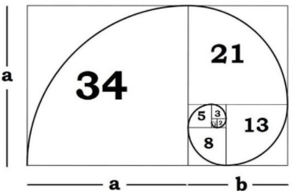
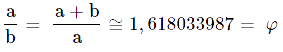
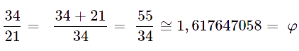
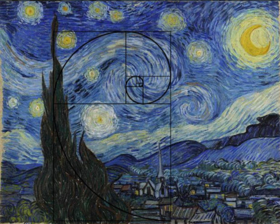
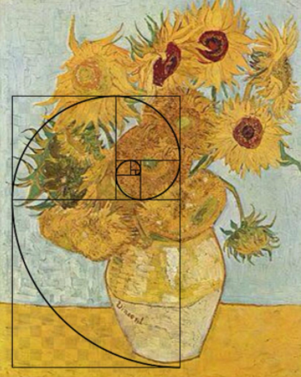
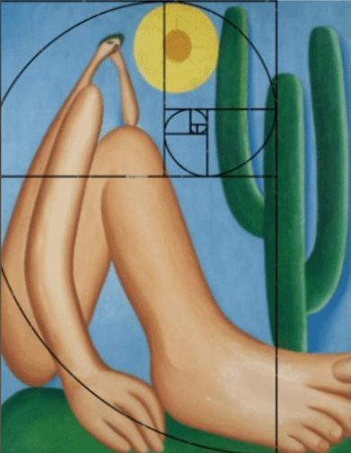
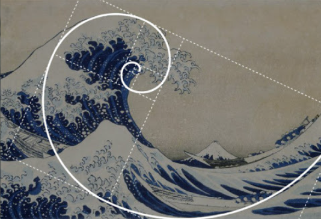
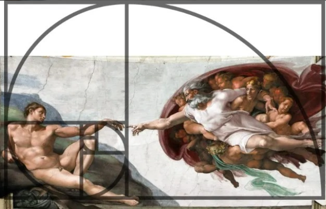

Vídeo
O que é Proporção Áurea?
Topo da páginaA Proporção áurea é uma constante real algébrica que é obtida quando dividimos uma reta em duas partes não iguais e depois pegamos o segmento mais longo dessa reta e dividimos pelo menor. O resultado dessa divisão corresponde a dízima: 1,6180... mais conhecida como Phi - φ o número de ouro.
Para que este cálculo seja feito, temos a seguinte fórmula:
Usando a imagem como exemlo, e aplicando seus valores na fórmula, temos:
Sequência de Fibonacci
Topo da páginaQuando um número é somado ao seu número anterior, dá um novo que número que, somando a o número anterior dá um próximo número, criando assim uma sequência infinita.
A Sequência de Fibonacci é: 1, 1, 2, 3, 5, 8, 13, 21, 34, 55, 89, 144, 233, 377, 610, 987, 1597, 2584, 4181... Nela percebemos que 1+1=2 e 2+3=5; 5+3=8; e assim seguindo. Além disso, quando patimos do número 5 e dividímos pelo número anterior, temos o número de ouro: 5/3=1,66...7; 144/89=1,617...
Obras e Proporções
Topo da página




